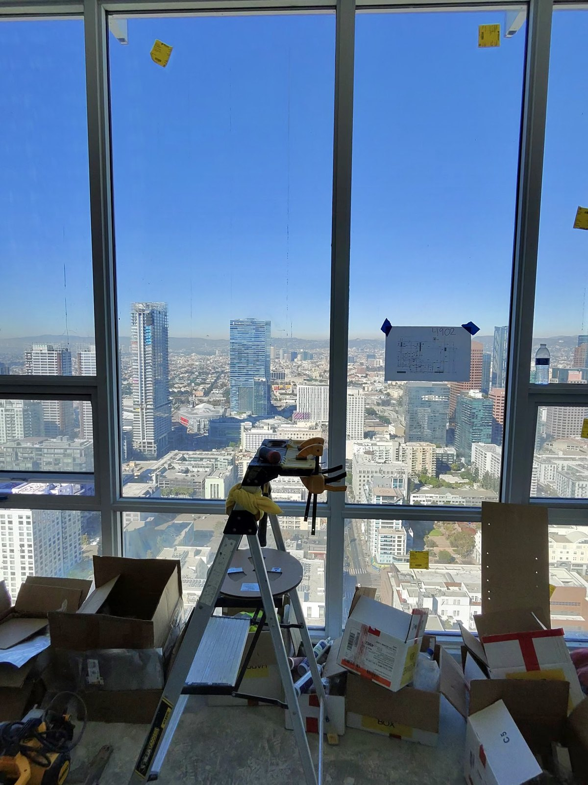
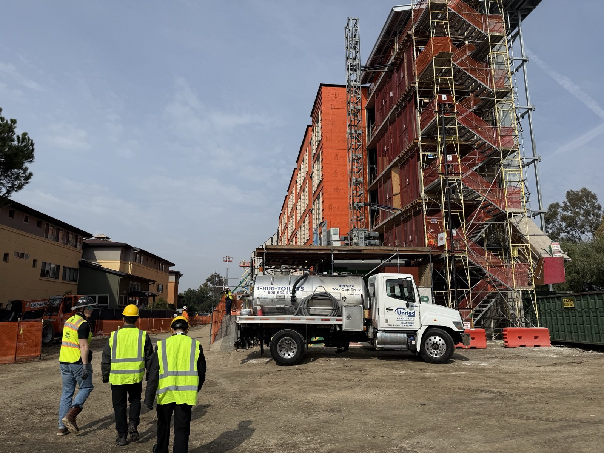
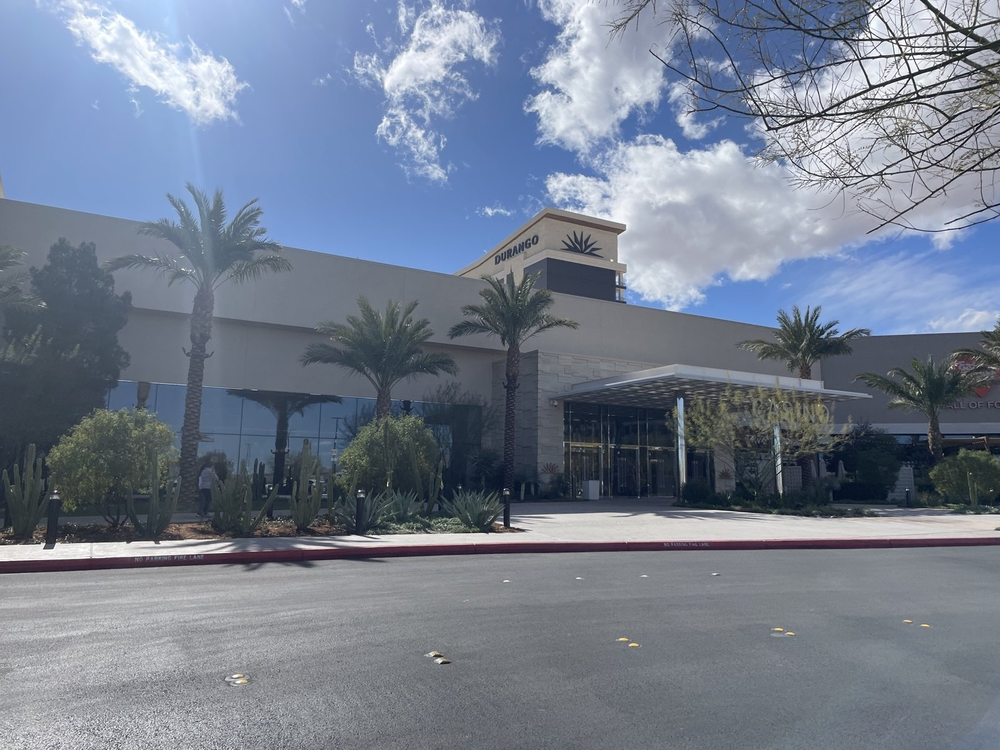
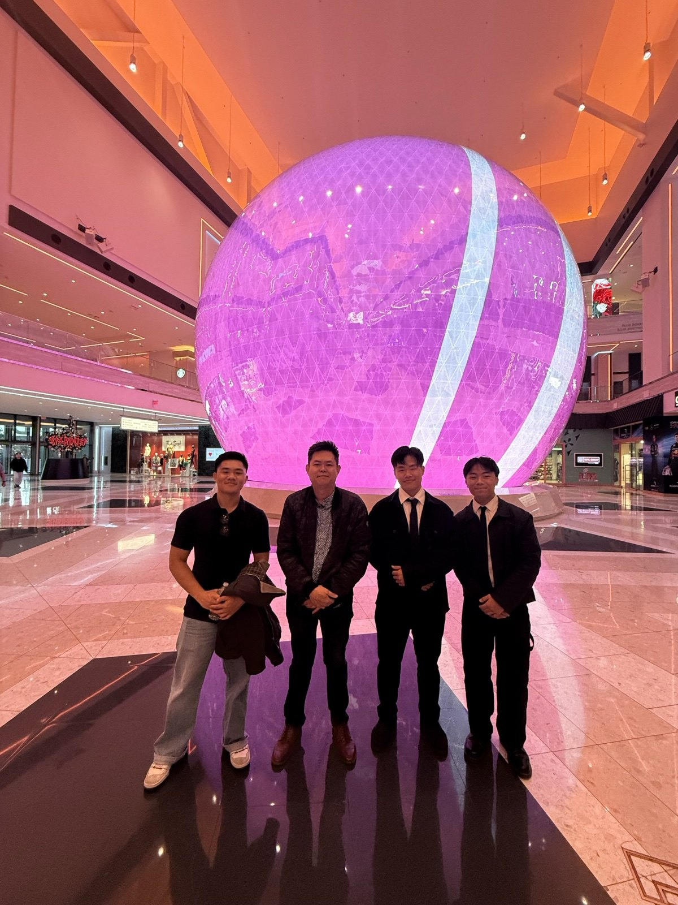
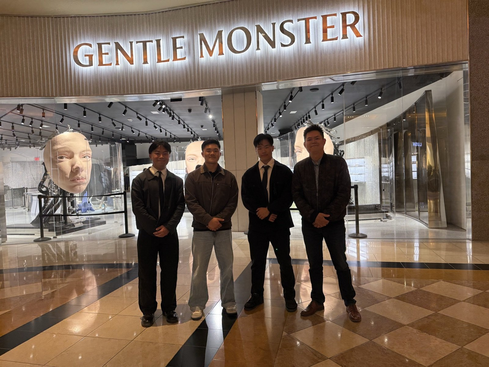
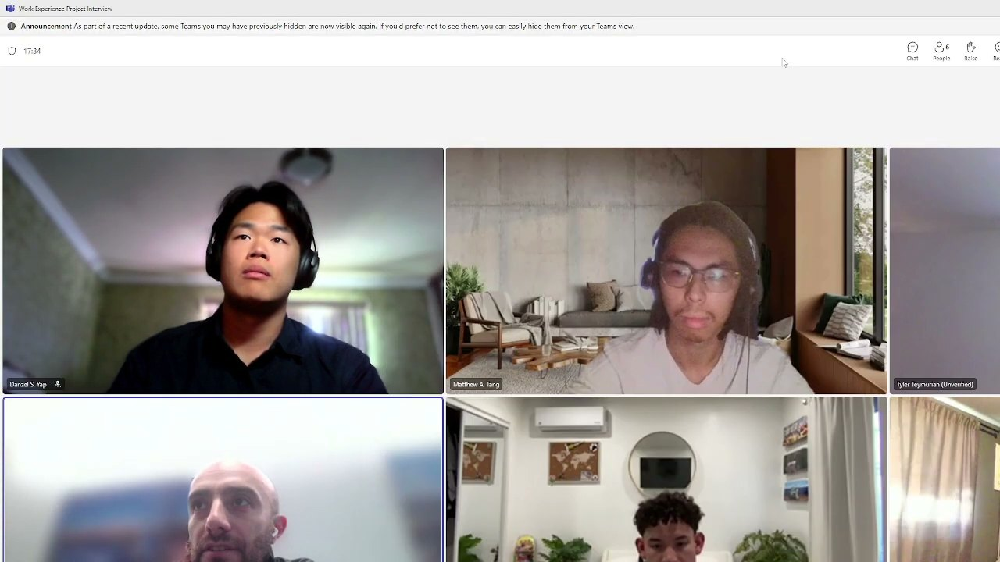

Knife plate supports
I detailed the support locations, plate dimensions, and bracing in the shop drawing. The field clip shows the crew setting the assembly by crane.

Field notes
Drawings, concrete operations, and rebar coordination.
Plus construction research and site visits.
Shop drawings I detailed
for field coordination.
I detailed the support locations, plate dimensions, and bracing in the shop drawing. The field clip shows the crew setting the assembly by crane.
The pit drawing brings together the slab, grade beams, plinths, and elevations. The short field clip is shown at half speed so the overall view is easier to follow.

The northwest plan coordinates footing and grade-beam elevations, excavation depths, and embed information.

Reinforcement coordination
A first-person view climbing out through the reinforcement after working inside the pile cap.
Concrete operations
Leading a pour means keeping the team aligned before the first truck arrives and through the last placement.
Inspections, quantities, concrete procurement, quality control, and field communication all have to come together.
Rebar coordination & temperature monitoring
A drawing is only part of the picture. Sometimes the next step is crawling through a grade beam to get a closer look.
My concrete work includes rebar coordination and temperature sensor installation, alongside the inspections and QC that support each pour.
First-person footage from inside the reinforcing cage.
Just taking the excavator for a drive—for the love of the game.
Construction technology research
I visited these projects as part of my research into construction workflows and AI. Job walks and conversations with industry teams helped ground the tools I went on to build.
Los Angeles
A visit to the tower project
during construction.

Site visits from the research archive.




Construction technology research
Conversations about project workflows
and practical uses for technology.

I consulted with executive leadership at more than 30 general contractors about AI in construction.
Recurring themes included reducing repeated data entry, helping systems exchange information, and keeping human judgment in decisions. The usefulness of a tool also depends on the size and needs of the project.
I managed a $10,000 budget and led a team across logistics, outreach, and software development.
Explore the softwareI detail rebar, produce embed shop drawings, excavation plans, and soffit plans in Revit, and work through the corrections when a drawing meets the site.
See how that becomes softwareProject inquiries